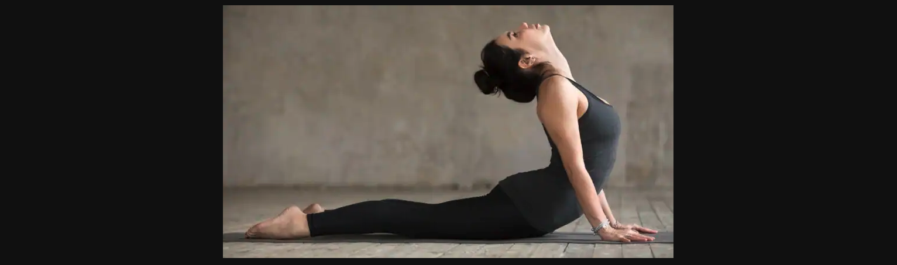

If you do Yoga you could functionally be this many years old:

What is Hatha Yoga?
What exactly Hatha yoga is hasn’t changed for thousands of years. However our thinking and perception of it certainly has. Language is a powerful thing, and in different cultures the same word can have a variety of definitions.
Throughout the evolution of yoga practice, the same word – Hatha – has come to mean different things too. Popular thinking ‘in the West’ (an all-too-common expression now), is that Hatha yoga is about balancing the body and mind. ‘Ha’ represents the esoteric sun, and ‘tha’ the moon. The practice of Hatha yoga aims to join, yoke, or balance these two energies.
A yoga class described as ‘Hatha’ will typically involve a set of physical postures (yoga poses) and breathing techniques. These are typically practised more slowly and with more static posture holds than a Vinyasa flow or Ashtanga class. And indeed, that is how we describe our Hatha yoga classes at Full Circle Yoga. Literally however, Hatha means ‘force’ and is more traditionally defined as ‘the yoga of force’, or ‘the means of attaining a state of yoga through force’.
Hatha yoga can be considered as anything you might do with the body, including:
yoga postures (practised in any style of ‘yoga’)
breathing techniques
mantra – chanting or reciting
mudra – hand gestures
shatkriyas and shatkarmas – cleansing techniques
types of visualisation
Downward Facing Dog - Adho Mukha Svanasana
This Hatha Yoga Posture is common in Ashtanga practice.
It’s part of the sun salutations sequence, commonly known as Surya Namaskar (Surya means sun).
This pose stretches out the back muscles, and the upper body.
Bridge Pose - Setu Bandhasana
This pose helps to strengthen the glutes, quadriceps, and core.
Bringing the chin towards the chest stimulates the thyroid gland, which is said to aid in regulating hormones.